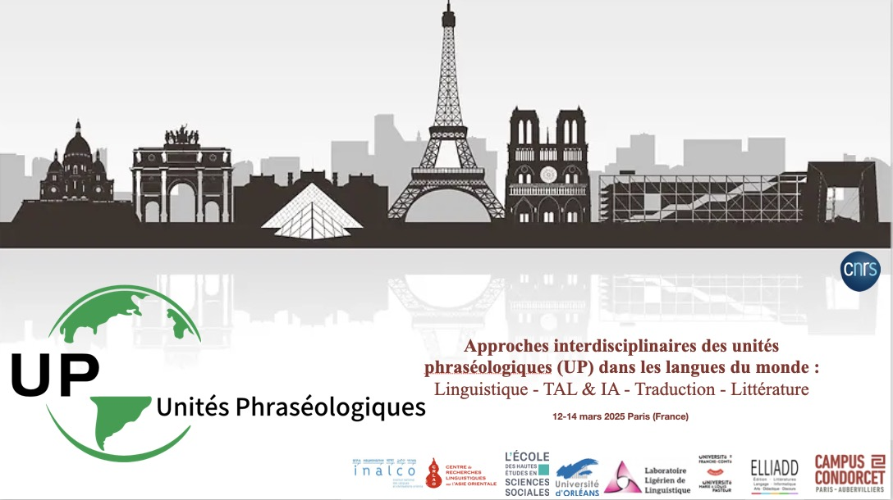
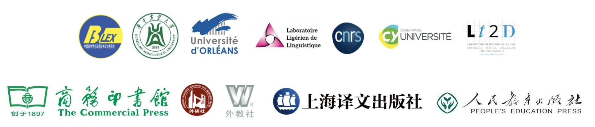
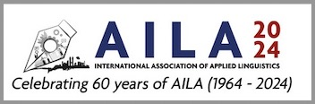

×
4. International Conference

Interdisciplinary approaches to phraseological units (PUs) in world languages: Linguistics - NLP & AI - Translation - Literature
See the announcement
Organizers: DAO Huy-Linh & CHEN Lian & DO-HURINVILLE Danh-Thành
Date and venue : 12-15 Mar 2025 INALCO, Paris (France)
Following on from the Phraseology in Theoretical and Applied Linguistics symposium held at the 20th AILA World Congress in Lyon in July 2023, we'd like to follow in the footsteps of the pioneers of research in this area (Phraseology: an interdisciplinary perspective, F. Meunier 2008) by proposing a Conferencefocusing on the interdisciplinary approach to phraseology. Entitled Interdisciplinary approaches to phraseological units in the languages of the world: Linguistics - NLP & AI - Translation - Literature, this international conference is jointly organized by CRLAO UMR 8563 (CNRS-EHESS-INALCO), ELLIADD EA 4661 (University of Franche-Comté), LLL UMR 7270 (CNRS - University of Orleans) and LT2D-Jean Pruvost center EA7518 (Cergy Paris University). It will take place at INALCO (Paris) on March 12, 13, 14 and 15, 2025.
Theme
The Conference will explore six main themes.
Theme 1: PUs and theoretical & applied linguistics
Theme 2: PUs and Lexicography
Theme 3: PUs and Didactics
Theme 4: PUs and Traductology
Theme 5: PUs and NLP (Natural Language Processing) & AI (Artificial Intelligence)
Theme 6: PUs and Literature
×
3. International Conference

PL & LTL 2024 : The 9th International Conference on Pedagogical Lexicography and L2 Teaching and Learning
< Lexicography and Knowledge Services in the Age of AIGC >. See the announcement
Organizers: GENG Yundong & CHEN Lian
Date: October 25-27, 2024
The 9th International Conference on Pedagogical Lexicography and Second Language Teaching and Learning (PL & LTL 2024) will be held from October 25 to 27, 2024 in Wuhan, China. PL & LTL 2024 centers on the evolving relationship among lexicography, L2 teaching and learning, and knowledge services in the dynamic Age of AI-Generated Content (AIGC). It is dedicated to promoting international dialogue on the latest advancements, emerging challenges, and future trends in pedagogical lexicography in an increasingly digital and post-dictionary world. The Conference will feature contributions by world-renowned academics, promoting dialogues among top lexicography theorists, practitioners, and publishers from both China and around the world.
Theme
In line with the overarching theme, “Lexicography and Knowledge Services in the Age of AIGC”, we invite submissions of high-quality empirical and theoretical research papers that cover a broad spectrum of topics, including but not limited to:
1. Pedagogical lexicography and language technologies (esp. use of Chatbots in dictionary-making)
2. Dictionary-integrated L2 pedagogy: theory and practice
3. Lexicography in the context of convergence media: theory and practice
4. Dictionary and dissemination of linguistic and non-linguistic knowledge
5. Reports on lexicographical and lexicological projects
Programme
×
2. International Symposium

2023-2024 CHEN Lian & GENG Yundong, Symposium « Innovating Digital Lexicography in the Era of Media Convergence » . AILA 21st World Congress (2024). 11-16 August 2024 in Kuala Lumpur, Malaysia. See the announcement
×
1. International Symposium

2022-2023 CHEN Lian, DAO Huy Linh, DO-HURINVILLE Danh-Thành, Symposium « Phraséologie en linguistique théorique et appliquée » [Phraseology in theoretical and applied linguistics], 20th world Congress, AILA, Lyon. 17-21 Juillet 2023. See the announcement